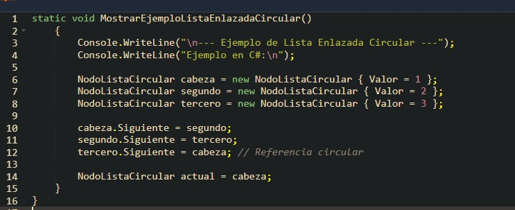

Lista Enlazada Circular
es una estructura de datos en la que el último nodo apunta al primero, formando un ciclo cerrado. Esto permite un recorrido infinito de la lista, ya que no tiene un principio ni un final definidos.

es una estructura de datos en la que el último nodo apunta al primero, formando un ciclo cerrado. Esto permite un recorrido infinito de la lista, ya que no tiene un principio ni un final definidos.